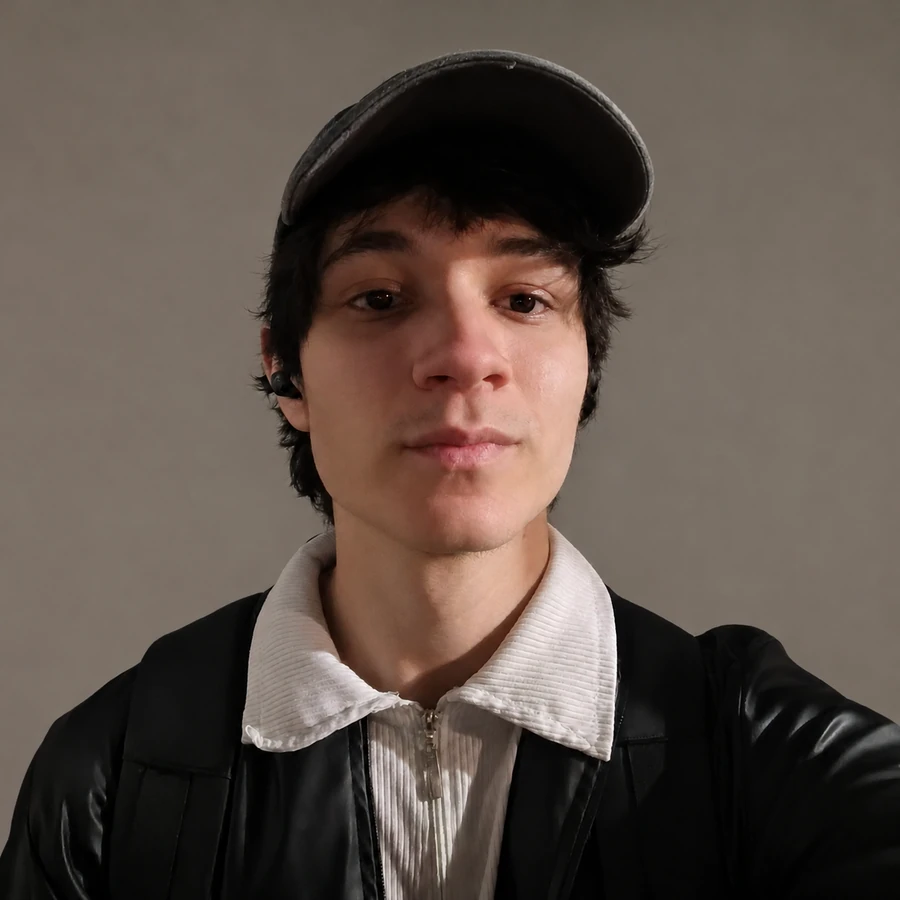
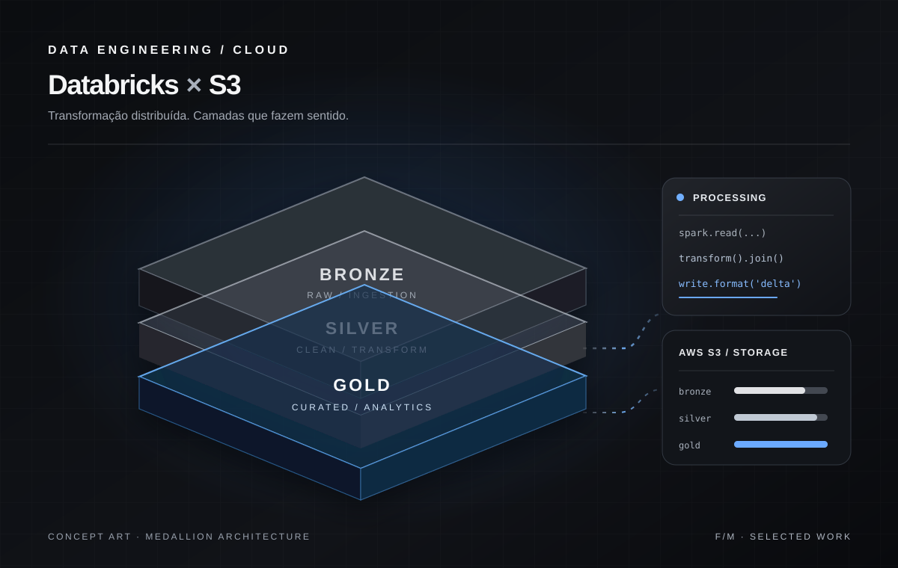
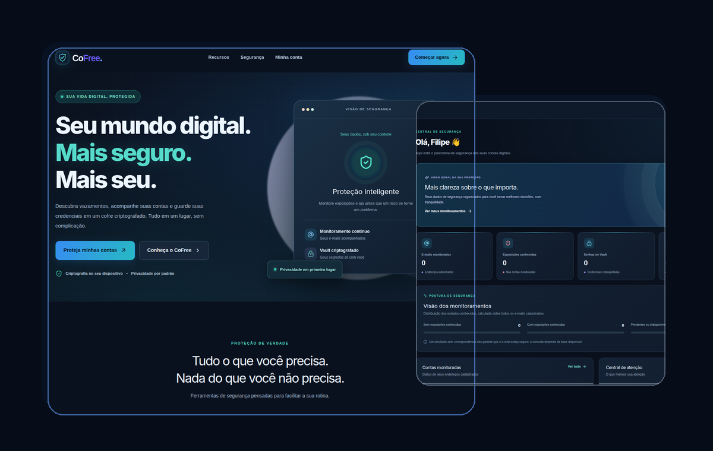

OLÁ, SOU FILIPE MONTEIRO
CONSTRUOSISTEMAS QUECONECTAM
Entre o dado bruto e a experiência final, existe engenharia. Desenvolvo pipelines de dados, APIs e aplicações web pensando no sistema inteiro.

Muito além da sintaxe.
Curiosidade técnica, visão de sistema e vontade de construir algo que funcione de verdade.
Não gosto de enxergar uma tecnologia isolada. Quero entender como as peças se conectam — da origem do dado à decisão que ele ajuda a tomar, da API à interface que alguém utiliza.
Sou estudante do 2º período de Análise e Desenvolvimento de Sistemas na Wyden UNIFAVIP, em Caruaru. Minha atuação prática acontece em projetos que cruzam engenharia de dados, backend e desenvolvimento web.
Já trabalhei com orquestração de pipelines, processamento com PySpark, modelagem de dados, integração de serviços em nuvem e construção de aplicações. O que mais me move é sair da ideia e chegar a uma solução estruturada, explicável e útil.
Como as tecnologias se conectam.
Explore os nós do meu ecossistema técnico e descubra onde cada ferramenta entra no desenvolvimento de sistemas.
Investigar falhas e compreender o caminho completo de uma integração.
Aprender ferramentas colocando sistemas reais de projeto para funcionar.
Organizar fluxos, dados e interfaces com responsabilidade de ponta a ponta.
Projetos, não promessas.
Arquiteturas, produtos e decisões documentadas. Cada projeto conta uma parte diferente do que sei construir.

LastFM Tracker
Dados musicais, da API ao insight.
Pipeline de dados para acompanhar tendências musicais globais e por país, da extração e orquestração à camada analítica.

Databricks × S3
Pipeline ETL com processamento distribuído e armazenamento em nuvem, estruturado com arquitetura Medallion.
Realeza Barbers
Aplicação para gerenciamento de barbearia, reunindo agendamentos, clientes, serviços e controle de acesso.

CoFree
Plataforma acadêmica de conscientização e monitoramento de exposição de credenciais, com foco em proteção de contas e privacidade.
UM PROJETO É UMA HISTÓRIA DE DECISÕES.
O CÓDIGO É A EVIDÊNCIA.
Não é só uma stack.
É como tudo conversa.
Explore o caminho de um dado: da API à visualização. Cada etapa tem um propósito dentro da arquitetura.
Databricks
Databricks · PySparkO PySpark padroniza informações e produz conjuntos preparados para a modelagem.
Tecnologia com propósito.
Prefiro mostrar como as ferramentas trabalham juntas em projetos a transformá-las em porcentagens arbitrárias.
Engenharia de dados.
Da ingestão à modelagem e ao consumo analítico.
VAMOS
CONSTRUIR
ALGO.
Estou em busca de oportunidades de estágio e colaboração em engenharia de dados, desenvolvimento backend e software. Se meu trabalho faz sentido para sua equipe, vamos conversar.